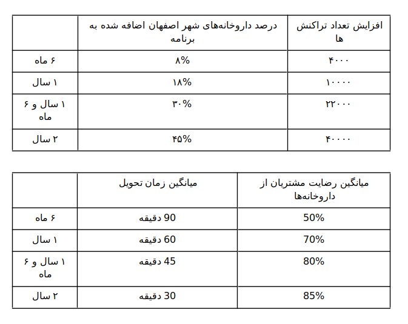
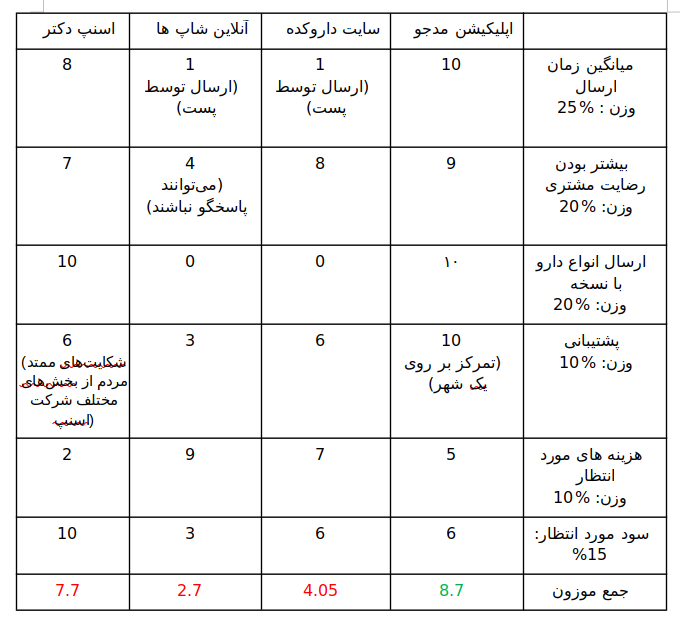

Intech Team
Based at Isfahan University of Technology
تیم اینتِک
طرح بازرگانی
:توصیف پروژه
این پروژه بستری برای ایجاد ارتباط بین مراکز توزیع دارو و مکمل های غذایی و ورزشی در سطح شهر اصفهان ایجاد میکند. ما اپلیکیشن تحت وبی ارائه میکنیم که اشخاص بتوانند از طریق آن دارو های مورد نیاز خود در نزدیک ترین فروشگاه یا داروخانه را مشاهده کرده و سفارش دهند و همچنین با بیشترین سرعت در درب منزل دریافت کنند.
بسیاری از شهروندان در هنگام نیاز به دارو احتیاج به دسترسی به آن در اسرع وقت دارند. عموما داروخانه ها در مناطق شلوغ شهری قرار دارند. این برنامه به مشتریان این امکان را میدهد که نسخه یا داروی مورد نیاز خود را در سایت ثبت کنند و این درخواست برای تمام داروخانههای سطح شهر اصفهان که در پلتفرم ما هستند فرستاده میشود و در صورتی که یکی از داروخانهها این درخواست را قبول کرد کاربر میتواند انتخاب کند که دارو برای او ارسال شود یا خود حضورا اقدام به دریافت دارو نماید بنابر این دسترسی به داروها از طریق دریافت سریع درب منزل ایده ای نو و پرطرفدار تلقی میشود. بعلاوه، اکثر مکمل های غذایی در حال حاضر بدون مجوز قانونی توزیع میشود. پلتفرم ما میتواند بستری قانونی و مورد اعتماد برای توزیع این کالاها فراهم کند.
یکی از اهداف اصلی ما دسترسی سریع به دارو است در نتیجه اقدامات مختلفی در این جهت در این وبسایت صورت میپذیرد. یکی از این اقدامات استفاده از یادگیری ماشین در خواندن نسخه های دستی و تبدیل آن به متن است چرا که دارخانه ها بتوانند سریعتر درخواست ارسالی را بررسی کنند و در صورت وجود همه دارو ها درخواست را قبول کنند.
یکی دیگر از اقدامات در جهت بهبود سرعت اضافه کردن کاربران Vip است به این صورت که کاربران عادی با پرداخت هزینه ای به صورت ماهانه به کاربران Vip ملحق میشوند و در این صورت تضمین میشود که داروهای مورد درخواست آنها در صورت وجود در داروخانهها بلافاصله ارسال خواهد شد و داروها در اصرع وقت به دست آنها میرسد. برای رسیدن به این هدف داروخانه مبلغ سود بیشتری نسبت به حالت عادی دریافت میکند تا که سیاستی باشد که داروخانه ها نیز در این امر ما را یاری کنند. و افراد حامل دارو در صورتی که در کل ماه میانگین زمان رساندن دارو به مقصد توسط آنها کمتر از عدد مشخصی باشد به نسبت سود بیشتری دریافت خواهند کرد.
مشتریان پس از دریافت دارو میتوانند مشاهده کنند که توسط کدام دارخانه دارو ارسال شده و به آن امتیاز دهی کنند داروخانههایی که در آخر ماه امتیاز کمی دریافت کرده باشند مورد بررسی قرار میگیرند و در صورت وجود مشکل از پلتفرم حذف میشوند.
یکی دیگر از اقدامات این است که برای داروخانهها در صورت موافقت خود داروخانه علاوه بر پنل در سایت یک سیستم انبار داری ارائه میشود که با استفاده از آن بتواند انبار دارو خود را کنترل کند مزیتی که اینکار به ما میدهد این است که در حین اینکه داروخانه دار نیاز خود را با این نرم افزار برطرف میکند ما میتوانیم لیستی از داروهای موجود او داشته باشیم و درصورتی که داروهای مورد نیاز مشتری در آن داروخانه وجود داشت دیگر بدون نیاز به ارسال درخواست به داروخانه و منتظر ماندن برای قبول کردن آنها مستقیم درخواست را مستقیم به داروخانه اختصاص دهیم.
ارزش سازمانی قابل اندازه گیری (آسا):
حوزههای اثرگذاری پروژه: اجتماعی بالاخص سلامت و مشتری
ارزش مورد نظر پروژه: افزایش سرعت و کیفیت سرویس دهی به مشتریان و همچنین افزایش سهم در بازار
سنجهها: تعداد تراکنشها ، درصد داروخانه های عضو در اپلیکیشن در شهر اصفهان، میانگین میزان رضایت مشتریان از داروخانهها، میانگین زمان دریافت دارو توسط مشتریان پس از ثبت درخواست
بازه زمانی: بازههای ۶ ماهه
آسا:
۱- رسیدن به ۴۰۰۰ هزار تراکنش در ۶ ماه اول کار برنامه
۲- همکاری با ۲۰٪ از داروخانههای شهر اصفهان در ۶ ماه اول کار برنامه
3- میانگین زمان تحویل دارو کمتر از 2 ساعت در ۶ ماه اول کار برنامه
4- میانگین رضایت 50 درصدی در در ۶ ماه اول کار برنامه
امکان سنجی و ارزیابی خطر:
یکی از چالش های اولیه ما کسب مجوز قانونی از سازمان غذا دارو برای این برنامه خواهد بود. یافتن چاله های قانونی و نحوه برآورده کردن آنها برای ارضا کردن چهارچوب های قانونی میتواند در این مسیر به ما کمک کند.
ممکن است این سیستم مورد قبول قشر هدف(خریداران دارو یا فروشندگان دارو ) واقع نشود و برای حل کردن این مشکل احتمالی بایستی رویکرد های تبلیغاتی و بازاریابی مناسب انجام گیرد که با تحقیق بر روی جامعه هدف و اختصاص بودجه به این امر ممکن خواهد بود.
قسمتی از فروش داروخانه ها به شکل حضوری انجام می گیرد و این ممکن است باعث غیر قابل اتکا بودن عدد موجودی در نرم افزار شود که با طراحی مناسب پایگاه های داده و ارتباط صحیح با پایگاه داده های داروخانه میتوان این مشکل را رفع کرد.
در صورت اجرای نامناسب، این پلتفرم میتواند بستری برای خرید حجم بالا و احتکار مواد دارویی بهداشتی باشد. راهکار ما در این مورد محدود کردن و نظارت بر حجم خرید کاربران و طراحی سیستمی است که با توجه به زمان و مقدار خرید و آدرس ارسالی موارد مشکوک را به عوامل انسانی گزارش کند.
عمدتا در ارسال اجناس مشکلاتی مربوط به زمان ارسال و بسته بندی و غیره به وجود می آیند. برای پردازش به این مسئله بخشی برای پشتیبانی اختصاص میدهیم که به شکایات بپردازد و با ضبط کردن آنها از بروز مشکلات همانند در آینده جلوگیری کند.
• یکی از چالشها سیستم پیک و ارسال به مشتری است از آنجایی که این پلتفرم به صورت متمرکز روی شهر اصفهان فعالیت میکند در نتیجه پیچیدگی زیادی نخواهد داشت و تصمیم بر این شد که برون سپاری نشده و افراد به صورت مستقیم توسط ما استخدام شوند که در مناطق مختلف فعالیت کنند.
مقایسه با دیگر گزینهها:
یکی از اصلیترین رقیبهای پلتفرم ما snapp doctor است. در این پلتفرم نه تنها خدمات ارسال دارو بلکه خدماتی نظیر مشاوره پزشکی، آزمایش و ... نیز داده میشود اما از مزایای پلتفرم ما نسبت به اسنپ این است که ما به صورت متمرکز روی شهر اصفهان فعالیت میکنیم و درنتیجه قابلیت کنترل و پیگیری بیشتری روی روند ارسال داروها خواهیم داشت که باعث افزایش کیفیت و همچنین افزایش رضایت مشتری خواهد شد، و در تلاش هر چه بیشتر برای کاهش زمان ارسال دارو هستیم و همچنین مکانیزم Vip برای ارسال دارو به مشتریانی که نیاز به ارسال سریع دارو دارند داریم که در اسنپ چنین چیزی دیده نمیشود. با این وجود اسنپ پلتفرمی است که چندین سال در حال فعالیت است و رقابت با آن میتواند یکی از اصلیترین چالشهای ما باشد اما در چند ماه اخیر به دلیل مشکلات پیش آمده محبوبیت و مقبولیت خود را بین مردم از دست داده است و حتی مردم دست به تحریم آن زدهاند. در نتیجه رقابت با اسنپ در این برهه زمانی که مردم به دنبال جایگزینی برای استفاده هستند خیلی دور از ذهن نیست و هم اکنون بسیاری از مشتریان از روی اجبار که جایگزینی وجود ندارد از اسنپ استفاده میکنند. یکی دیگر از مشکلات اسنپ دکتر شلوغ بودن سایت است بخصوص در بخش ارسال درخواست دارو که طراحی اصلا کاربر پسند نیست و دکمه مشخصی برای انتقال به بخش درخواست دارو وجود ندارد.
یکی دیگر از پلتفرم های مشابه میتوان به داروکده اشاره کرد که صرفا یک فروشگاه اینترنتی برای محصولات بدنسازی،آرایشی و بهداشتی و مکمل های تغذیه ای است و فروش داروها در آن انجام نمیشود .همچنین این وبسایت تنها شامل موجودی یک یا چند انبار محدود است و اگر یک محصول موجود نباشد باید به یک فروشگاه دیگر مراجعه کرد و فرایند خرید را مجددا طی نمود.
این درصورتی است که در مراحل بعد اپلیکیشن مدجو و در صورت دریافت مجوزهای مربوطه میتوان گزینه خرید دارو را نیز اضافه کرد. علاوه بر این، پلتفرم پیشنهادی ما به صورت یک سیستم نامتمرکز شامل موجودی تعدادی از داروخانه های شهر میشود که این تعداد میتواند اکثریت داروخانه های شهر را شامل شود.
از دیگر گزینه های مطرح می توان به فضای مجازی و اپلیکیشن اینستاگرام اشاره کرد که در پیج های مختلف فروش مکمل ها مخصوصا بدنسازی رایج است. که با توجه به سیستماتیک نبودن این گزینه و شخصی بودن این پلتفرم بررسی تراکنش ها و مذاکره با داروخانه های عملا ناممکن است. البته در ابتدا کار این گزینه تقریبا رایگان است ولی در ادامه راه این مسیر به بن بست خواهد خورد.
با توجه به توضیحات بالا در جدول پایین در ۳ شاخص مزایا و معایب، هزینه و سود دهی از ۱ تا ۱۰ به سه گزینه نمره دهی کردیم. هرچه امتیاز بالاتر باشد گزینه مربوطه از آن لحاظ بهتر است.
پیشنهاد:
با استفاده از این پلتفرم مشتریان میتوانند به دور از شلوغی شهر اصفهان داروهای مورد نیاز خود و همچنین مکمل های غذایی را از داروخانه معتبر به سرعت تهیه کنند و درب منزل تحویل بگیرند.
این پلتفرم باعث میشود که در وقت و انرژی مشتریان صرفه جویی شود چرا که در شهری مانند اصفهان که شهر نسبتا شلوغی هست به طور میانگین خریدن مشتری به روش معمول از داروخانه زمان بسیار بیشتری از او خواهد گرفت تا اینکه با یک سفارش ساده در سایت بتواند درب منزل داروی مد نظر خود را تحویل بگیرد.
همچنین با گسترش جمعیت کم نیستند افرادی که به صورت تک نفره زندگی میکنند در نتیجه در چنین مواقعی در صورت حتی در صورت نیاز به یک مسکن ساده احتمالا خود فرد در وضعیت مناسبی برای تهیه آن به صورت معمول نیست و ترجیح هر فردی در چنین شرایطی تحویل گرفتن دارو در درب منزل در سریعترین زمان ممکن است.
یکی دیگر از مشکلات این است که برای مشتریانی شاید در وضعیت عادی خرید از داروخانه نزدیک خانه منظقی تر به نظر برسد اما در شرایط زمانی متفاوت مانند نیمه شب که تعداد داروخانههای شبانه روزی محدود است طبق تجربه از افراد مختلف جامعه میتوان به این نتیجه رسید که مردم ترجیح میدند دارو را به سرعت بدون دردسر تحویل بگیرند و استفاده کنند.
به وضوح میتوان مشاهده کرد که این پلتفرم برای عموم مردم ارزش ایجاد میکند و در صورت وجود آن تمایل به استفاده از آن را خواهند داشت چرا که مردم ترجیح میدهند برای امور سلامتی هر چه سریعتر اقدام کنند و ارزشی که دقیقا این پلتفرم ارائه میدهد افزایش سرعت در دسترسی به داروهای ساده بدون نسخه و همچنین مکمل های غذایی است.
چیزی که این پلتفرم را نسبت به رقبا جدا میکند مختص بودن این پلتفرم نسبت به شهر اصفهان و پذیرش همه انواع داروها است که باعث میشود کیفیت و سرعت خدمت رسانی به صورت قابل توجهی افزایش یابد و مردم بومی نیز احساس بهتری داشته باشند که به شکایت آنها بهتر رسیدگی خواهد شد.
علاوه بر مردم داروخانهها نیز از این طرح استقبال خواهند کرد چرا که از شلوغی داروخانهها جلوگیری شده و باعث میشود متصدیان دارخوانه فشار کاری کمتری را تحمل کنند و همچنین کمتر با افرادی که بیماری قابل انتقال دارند برخورد حضوری و چهره به چهره داشته باشند. و از جهت دیگر در صورتی که داروخانه موافقت کند میتوانند از خدمات انبار داری این پلتفرم نیز بهرمند شوند.